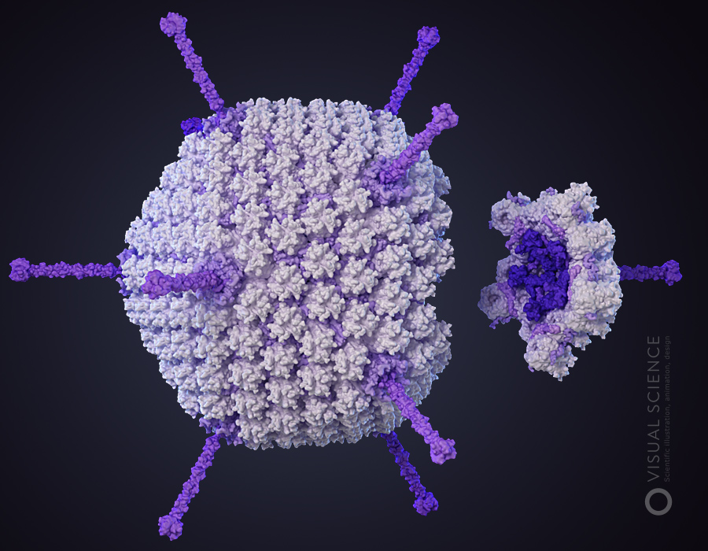

<!--
  Generated template for the FactCheckerPage page.

  See http://ionicframework.com/docs/components/#navigation for more info on
  Ionic pages and navigation.
-->
<ion-header>
    <ion-navbar>
        <ion-title text-center>Fato ou Fake?</ion-title>
        <!-- <ion-buttons end>
            <button ion-button size="small" fill="solid" on-click="send(imageFactOrFake)">enviar</button>
        </ion-buttons> -->
    </ion-navbar>

</ion-header>

<ion-content padding>
    <ion-list>
        <ion-item class="no-padding" no-lines>
            <ion-textarea [(ngModel)]="textToCheck" placeholder="Cole o texto para verificar" rows="3" style="border-style: solid; border-width: 1px; border-radius: 15px;"></ion-textarea>
        </ion-item>
        <ion-item no-lines style="margin-top:50px;">
            

            <!--  -->
            <!--  -->
        </ion-item>
        <ion-item no-lines text-center text-wrap>

            <div>
                <ion-badge *ngIf="!toggleNewVerify" color="{{answerColor}}"> {{answer}} </ion-badge><br>
                <button *ngIf="toggleNewVerify" ion-button small color="dark" (click)="send(imageFactOrFake)">Verificar</button>
                <button *ngIf="!toggleNewVerify" ion-button small color="dark" (click)="newFactChecking()">Nova verificação</button>
            </div>
        </ion-item>
    </ion-list>
</ion-content>
<!-- <ion-footer>
    <ion-toolbar position="bottom">
        <ion-item>
            <button ion-button large color="dark" item-left (click)="addPicture(0, imageFactOrFake)"><ion-icon name="image"></ion-icon></button>

        </ion-item>
    </ion-toolbar>
</ion-footer> -->